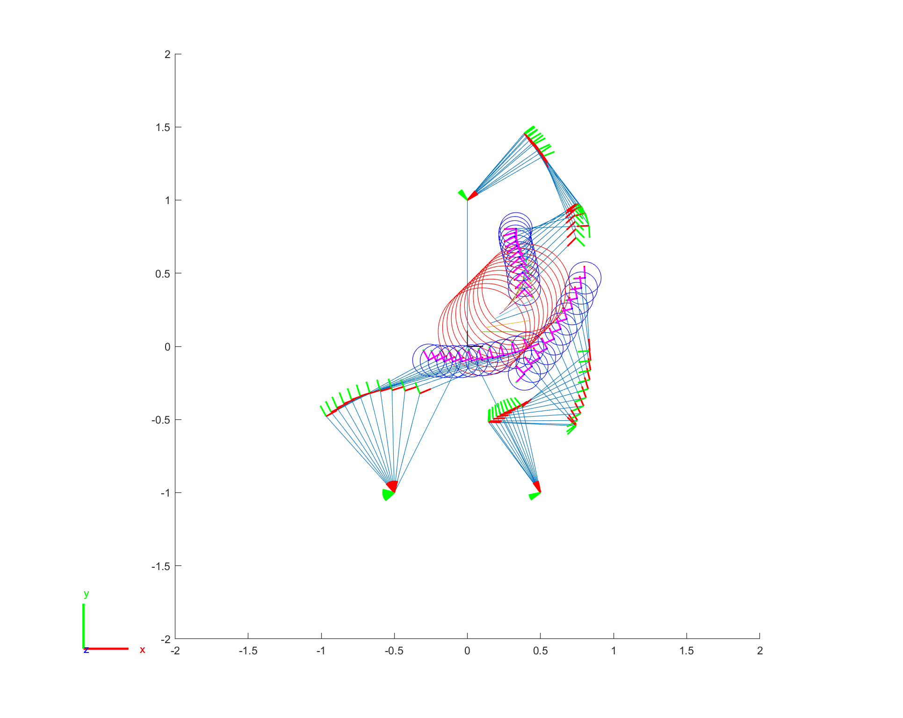
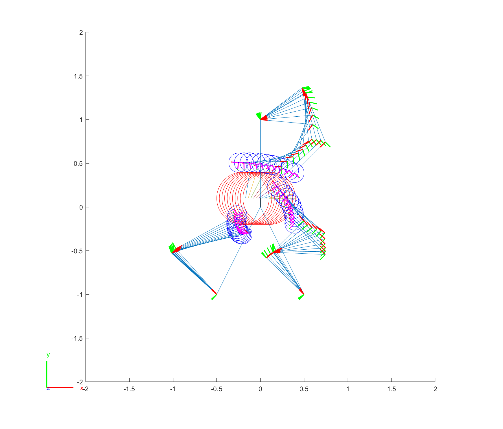
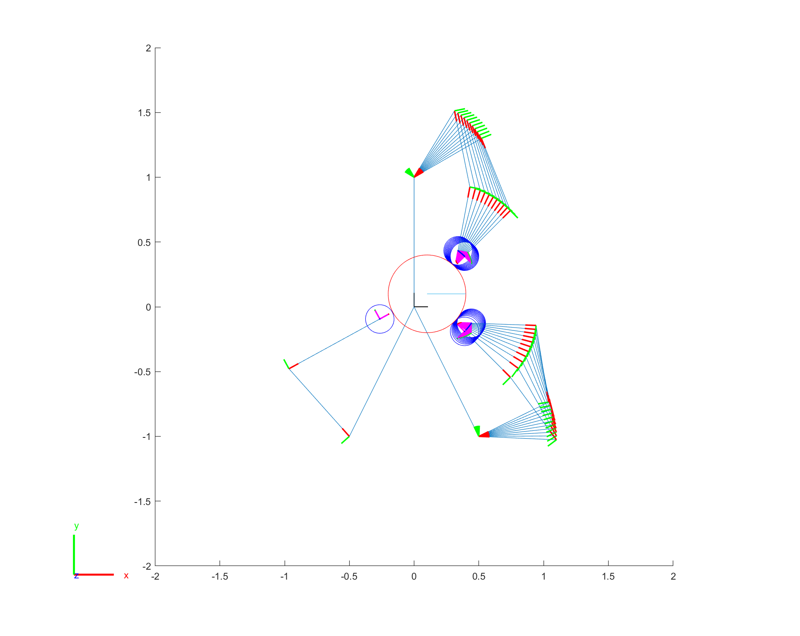

In-hand manipulation
Defined as transitions between different grasps [Zhang et al. 1996]
Topological features of object and finger:
Example: vertices, edges, surface patch of geometry
Canonical grasp:
Defined in terms of contact pairs between topological features of the hand and the object. Force closure is required.
Example: {(F1 surface, Obj edge 1), (F2 surface, Obj surface patch 2)}
Directed graph of possible transitions
Need to be manually assigned at this time.
Grasp workspace
- The range of possible manipulations with a given grasp [Kerr 1986]
- As a function of the rolling and sliding that occurs at the contacts
- Initial configuration
- The path the object moves along
- Explored by numerical methods
- Assigned the velocity of each configuration after planning, trapezoidal velocity profile
Exploration strategies
Move object in a desired direction
- Each finger contributes two linear constraints
- Total degrees of freedom: #Joints + 3 (from object) - 2 * #Fingers
- If we have 2 or more joints on each finger, we can control the movement ($x, y, \phi$) of the object by rolling.
- Velocity can be assigned afterwards.


Move fingers on the boundary of the object

RRT exploration
Now we explore the workspace of a canonical grasp using the two strategy described above. For a 2D problem, the C-space is the posture of the object, i.e. $(x,y, \phi)$.
Standard RRT algorithm.
- Randomly sample C-space $c$
- Shoot a line from nearest point $n$ to $c$ until boundary condition failed (not force closure or object-finger not in touch)
- Mark point if force closure with $n-1$ or less fingers (This will be used for finger gaits)
Finger gaits
Let $S$ be the boundary of the circle as shown above, $F_i$ be the $i$-th finger. For two adjacent canonical grasps, say $\{(F_1, S), (F_2, S)\}$ and $\{(F_1, S), (F_2, S)\}, (F_3, S)\}$, if their RRT trees have intersection, we can employ the second strategy to adjust the position of the contact on the object boundary. Then we can remove $F_3$ to perform the finger gaits.
Control of Manipulation
With a planning based on kinematics, we can further get the desired joint torque based on optimization method, in which joint configuration and velocity of all fingers are all known.